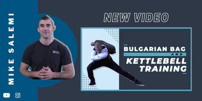

B695 · Try This Superset: Bulgarian Bag + Kettlebell
Hi {first_name},
Bulgarian Bag and Kettlebell superset. They go together like chocolate and peanut butter…or like grass-fed steak and biodynamic potatoes ; )
If you have a Bulgarian Bag and kettlebell available, pull them out and work this superset into your training this week.
Included in the video:
Click here to see this week's video.
 Keep training intentionally, Mike Salemi
P.S. If you want a fun, inviting environment for learning how to get the most out of kettlebell training, check out my brand new Kettlebell Lifestyle LIVE class. There’s a new workout every week and I guide you through warm up, workout, and decompression stretches at the end. Check out the details here and join me. |